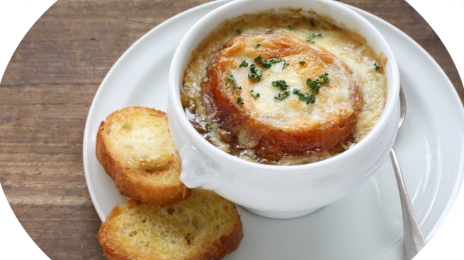

SOPA DE CEBOLLA

Ingredientes (4 personas):
- 1 Kg de cebollas
- 2 l. de caldo de carne
- 1 cucharada de mantequilla
- 100 gr. de queso emmental suizo o gruyere rayado
- Pan tostado en rebanadas
- Tomillo
- 1 hoja de laurel
- Pimienta
Proceso:
- Pelar y partir las cebollas en rodajas finas.
- Rehogarlas con la mantequilla, sal y pimienta a fuego lento hasta que estén transparentes sin dorarse.
- Añadir la harina sin dejar de remover.
- Ponerlo en una cazuela con el caldo, el tomillo y el laurel.
- Dejar cocer a fuego lento durante unos 15 minutos.
- Poner las rebanadas de pan encima, espolvorear el queso y gratinar al horno